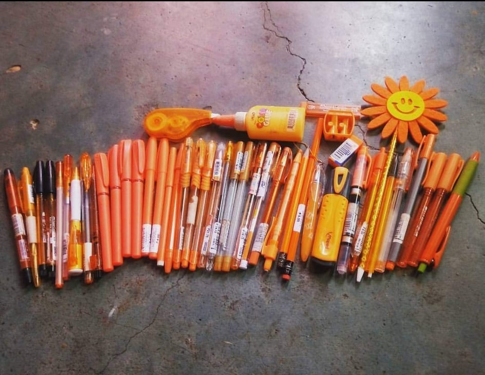
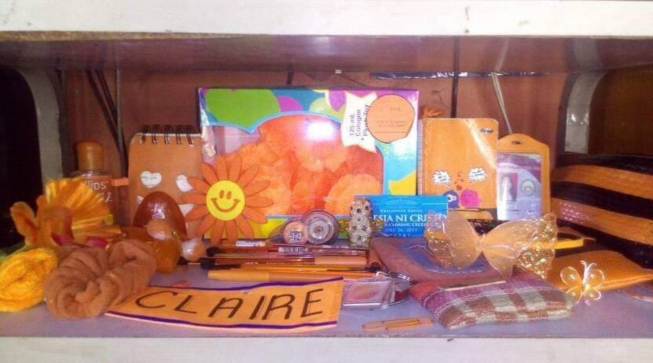
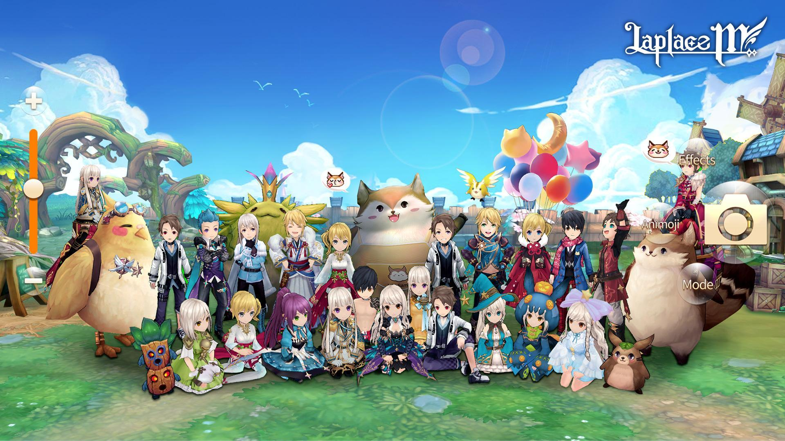
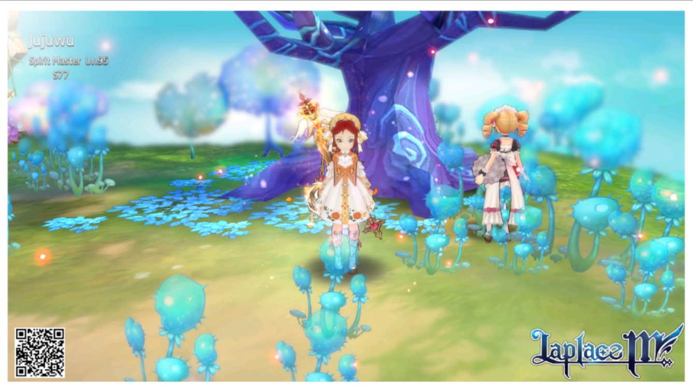

This was my collection way back 2015 and still collects orange things until now. It may sound weird, but I'm so addicted to color orange to the fact that it helps me psychologically. It relieves my stress and anxiety just by looking at them. My friends and classmates often call me 'Orange girl'. ^_^
 Next is photo of an MMORPG game called Laplace M. I've been playing this game for about 2 years and no plans to quit as this game saves me from depression. While playing, I found great friends from different places here in Philippines, also from SEA countries like Indonesia, Malaysia, Thailand and Singapore.
 I'm definitely a certified coffee lover. Despite of my heart condition, I still can't stop from drinking it. :<

https://www.nbcnews.com/better/lifestyle/how-tap-health-benefits-coffee-ncna1096031